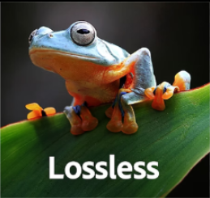

Lossless

Wat is compressie?
Compressie houd eigenlijk in dat je een bestand overschrijft, maar dat de bestandgrootte kleiner wordt. Denk hierbij aan het overschrijven van muziek, een foto etc. Er zijn 2 soorten compressie lossy en lossless.
Lossy
Lossless
Compressie zonder enige vorm van verlies heet Lossless (vandaar de naam)
Op deze manier blijft alle informatie precies hetzelfde, alleen wordt de bestand grootte dus kleiner. Ook gaat bij Lossless niks van de kwaliteit verloren. Voorbeelden waarbij Lossless wordt gebruikt zijn ZIP-bestanden en PNG-afbeeldingen.
Lossy
Compressie waarbij de kwaliteit van bestand vermindert heet Lossy (vandaar weer de naam)
Bij Lossy wordt het bestand kleiner gemaakt (net als bij lossless), maar bij lossy vermindert de kwaliteit. Een lossy bestand is dan wel kleiner dan een lossless bestand. Voorbeelden van lossy zijn JPG-afbeeldingen.